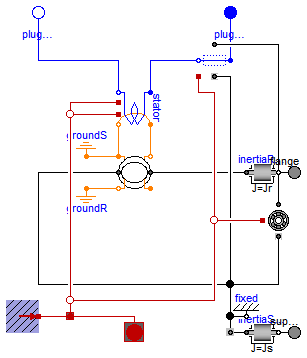

This package contains interface definitions of the magnetic ports as well as partial models.
Extends from Modelica.Icons.InterfacesPackage (Icon for packages containing interfaces).
| Name | Description |
|---|---|
| Complex magnetic port | |
| NegativeMagneticPort | Negative complex magnetic port |
| PositiveMagneticPort | Positive complex magnetic port |
| PartialTwoPort | Two magnetic ports for graphical modeling |
| PartialTwoPortElementary | Two magnetic ports for textual modeling |
| Partial model for induction machine | |
| StateSelector | Transform instantaneous values to space phasors and select states |
The potential quantity of the magnetic port is the complex magnetic potential difference  . The corresponding flow quantity is the magnetic flux
. The corresponding flow quantity is the magnetic flux  .
.
PositiveMagneticPort, NegativeMagneticPort
| Type | Name | Description |
|---|---|---|
| ComplexMagneticPotentialDifference | V_m | Complex magnetic potential difference |
| flow ComplexMagneticFlux | Phi | Complex magnetic flux |
connector MagneticPort "Complex magnetic port"
Modelica.SIunits.ComplexMagneticPotentialDifference V_m
"Complex magnetic potential difference";
flow Modelica.SIunits.ComplexMagneticFlux Phi "Complex magnetic flux";
end MagneticPort;
Negative magnetic port.
MagneticPort, PositiveMagneticPort
Extends from Modelica.Magnetic.FundamentalWave.Interfaces.MagneticPort (Complex magnetic port).
| Type | Name | Description |
|---|---|---|
| ComplexMagneticPotentialDifference | V_m | Complex magnetic potential difference |
| flow ComplexMagneticFlux | Phi | Complex magnetic flux |
connector NegativeMagneticPort "Negative complex magnetic port" extends Modelica.Magnetic.FundamentalWave.Interfaces.MagneticPort;end NegativeMagneticPort;
Positive magnetic port.
MagneticPort, NegativeMagneticPort
Extends from Modelica.Magnetic.FundamentalWave.Interfaces.MagneticPort (Complex magnetic port).
| Type | Name | Description |
|---|---|---|
| ComplexMagneticPotentialDifference | V_m | Complex magnetic potential difference |
| flow ComplexMagneticFlux | Phi | Complex magnetic flux |
connector PositiveMagneticPort "Positive complex magnetic port" extends Modelica.Magnetic.FundamentalWave.Interfaces.MagneticPort;end PositiveMagneticPort;
 Modelica.Magnetic.FundamentalWave.Interfaces.PartialTwoPort
Modelica.Magnetic.FundamentalWave.Interfaces.PartialTwoPort

This magnetic two port element consists of a positive and a negative magnetic port and considers the flux balance of the two ports. Additionally the magnetic potential difference (of the positive and the negative port) and the magnetic flux (into the positive magnetic port) are defined. This model is mainly to used to extend from in order build more complex - graphical - models.
PositiveMagneticPort, NegativeMagneticPort, PartialTwoPortElementary
| Type | Name | Description |
|---|---|---|
| PositiveMagneticPort | port_p | Positive complex magnetic port |
| NegativeMagneticPort | port_n | Negative complex magnetic port |
partial model PartialTwoPort "Two magnetic ports for graphical modeling"PositiveMagneticPort port_p "Positive complex magnetic port"; NegativeMagneticPort port_n "Negative complex magnetic port"; end PartialTwoPort;
Modelica.Magnetic.FundamentalWave.Interfaces.PartialTwoPortElementary
This magnetic two port element only consists of a positive and a negative magnetic port. This model is mainly used to extend from in order build more complex - equation based - models.
PositiveMagneticPort, NegativeMagneticPort, PartialTwoPort
Extends from Modelica.Magnetic.FundamentalWave.Interfaces.PartialTwoPort (Two magnetic ports for graphical modeling).
| Type | Name | Description |
|---|---|---|
| PositiveMagneticPort | port_p | Positive complex magnetic port |
| NegativeMagneticPort | port_n | Negative complex magnetic port |
partial model PartialTwoPortElementary
"Two magnetic ports for textual modeling"
extends Modelica.Magnetic.FundamentalWave.Interfaces.PartialTwoPort;
Modelica.SIunits.ComplexMagneticPotentialDifference V_m
"Complex magnetic potential difference";
Modelica.SIunits.ComplexMagneticFlux Phi "Complex magnetic flux";
equation
// Flux into positive port
V_m = port_p.V_m - port_n.V_m;
// Magneto motive force
port_p.Phi = Phi;
// Local flux balance
port_p.Phi + port_n.Phi = Complex(0,0);
end PartialTwoPortElementary;
 Modelica.Magnetic.FundamentalWave.Interfaces.PartialBasicInductionMachine
Modelica.Magnetic.FundamentalWave.Interfaces.PartialBasicInductionMachine
This partial model for induction machines contains elements common in all machine models.
Extends from Modelica.Electrical.Machines.Icons.FundamentalWaveMachine.
| Type | Name | Default | Description |
|---|---|---|---|
| Inertia | Jr | Rotor inertia [kg.m2] | |
| Boolean | useSupport | false | Enable / disable (=fixed stator) support |
| Inertia | Js | Stator inertia [kg.m2] | |
| Boolean | useThermalPort | false | Enable / disable (=fixed temperatures) thermal port |
| Integer | p | Number of pole pairs (Integer) | |
| Frequency | fsNominal | Nominal frequency [Hz] | |
| Real | effectiveStatorTurns | 1 | Effective number of stator turns |
| PartialPowerBalanceInductionMachines | powerBalance | redeclare output Modelica.El... | Power balance |
| PartialThermalAmbientInductionMachines | thermalAmbient | redeclare Modelica.Electrica... | |
| PartialThermalPortInductionMachines | thermalPort | redeclare Modelica.Electrica... | Thermal port of induction machines |
| Operational temperatures | |||
| Temperature | TsOperational | Operational temperature of stator resistance [K] | |
| Nominal resistances and inductances | |||
| Resistance | Rs | Stator resistance per phase at TRef [Ohm] | |
| Temperature | TsRef | Reference temperature of stator resistance [K] | |
| LinearTemperatureCoefficient20 | alpha20s | Temperature coefficient of stator resistance at 20 degC [1/K] | |
| Inductance | Lssigma | Stator stray inductance per phase [H] | |
| Inductance | Lszero | Lssigma | Stator zero inductance per phase [H] |
| SalientInductance | L0 | Salient inductance of an unchorded coil | |
| Losses | |||
| FrictionParameters | frictionParameters | Friction losses | |
| CoreParameters | statorCoreParameters | Stator core losses | |
| StrayLoadParameters | strayLoadParameters | Stray load losses | |
| Type | Name | Description |
|---|---|---|
| Flange_a | flange | Shaft |
| Flange_a | support | Support at which the reaction torque is acting |
| PositivePlug | plug_sp | Positive plug of stator |
| NegativePlug | plug_sn | Negative plug of stator |
| PartialThermalPortInductionMachines | thermalPort | Thermal port of induction machines |
partial model PartialBasicInductionMachine
"Partial model for induction machine"
extends Modelica.Electrical.Machines.Icons.FundamentalWaveMachine;
constant Modelica.SIunits.Angle pi=Modelica.Constants.pi;
constant Integer m=3 "Number of phases";
// Mechanical parameters
parameter Modelica.SIunits.Inertia Jr(start=0.29) "Rotor inertia";
parameter Boolean useSupport=false "Enable / disable (=fixed stator) support";
parameter Modelica.SIunits.Inertia Js(start=Jr) "Stator inertia";
parameter Boolean useThermalPort=false
"Enable / disable (=fixed temperatures) thermal port";
parameter Integer p(min=1, start=2) "Number of pole pairs (Integer)";
parameter Modelica.SIunits.Frequency fsNominal(start=50) "Nominal frequency";
parameter Modelica.SIunits.Temperature TsOperational(start=293.15)
"Operational temperature of stator resistance";
parameter Modelica.SIunits.Resistance Rs(start=0.03)
"Stator resistance per phase at TRef";
parameter Modelica.SIunits.Temperature TsRef(start=293.15)
"Reference temperature of stator resistance";
parameter Modelica.Electrical.Machines.Thermal.LinearTemperatureCoefficient20
alpha20s(start=0) "Temperature coefficient of stator resistance at 20 degC";
parameter Real effectiveStatorTurns = 1 "Effective number of stator turns";
parameter Modelica.SIunits.Inductance Lssigma(start=3*(1 - sqrt(1 - 0.0667))/(2*pi*fsNominal))
"Stator stray inductance per phase";
parameter Modelica.SIunits.Inductance Lszero=Lssigma
"Stator zero inductance per phase";
parameter Modelica.Magnetic.FundamentalWave.Types.SalientInductance L0(d(start=1),q(start=1))
"Salient inductance of an unchorded coil";
parameter Modelica.Electrical.Machines.Losses.FrictionParameters
frictionParameters(
wRef(start=2*pi*fsNominal/p)) "Friction losses";
parameter Modelica.Electrical.Machines.Losses.CoreParameters
statorCoreParameters(
final m=3,
wRef(start=2*pi*fsNominal/p),
VRef(start=100)) "Stator core losses";
parameter Modelica.Electrical.Machines.Losses.StrayLoadParameters
strayLoadParameters(
IRef(start=100),
wRef(start=2*pi*fsNominal/p)) "Stray load losses";
// Mechanical quantities
output Modelica.SIunits.Angle phiMechanical = flange.phi-internalSupport.phi
"Mechanical angle of rotor against stator";
output Modelica.SIunits.AngularVelocity wMechanical(displayUnit="1/min") = der(phiMechanical)
"Mechanical angular velocity of rotor against stator";
output Modelica.SIunits.Torque tauElectrical = inertiaRotor.flange_a.tau
"Electromagnetic torque";
output Modelica.SIunits.Torque tauShaft = -flange.tau "Shaft torque";
replaceable output Modelica.Electrical.Machines.Interfaces.InductionMachines.PartialPowerBalanceInductionMachines
powerBalance(
final powerStator = Modelica.Electrical.Machines.SpacePhasors.Functions.activePower(vs, is),
final powerMechanical = wMechanical*tauShaft,
final powerInertiaStator = inertiaStator.J*inertiaStator.a*inertiaStator.w,
final powerInertiaRotor = inertiaRotor.J*inertiaRotor.a*inertiaRotor.w,
final lossPowerStatorWinding = -sum(stator.heatPortWinding.Q_flow),
final lossPowerStatorCore = -stator.heatPortCore.Q_flow,
final lossPowerStrayLoad = -strayLoad.heatPort.Q_flow,
final lossPowerFriction = -friction.heatPort.Q_flow) "Power balance";
// Stator voltages and currents
output Modelica.SIunits.Voltage vs[m] = plug_sp.pin.v - plug_sn.pin.v
"Stator instantaneous voltages";
output Modelica.SIunits.Current is[m] = plug_sp.pin.i
"Stator instantaneous currents";
Modelica.Mechanics.Rotational.Interfaces.Flange_a flange "Shaft";
Modelica.Mechanics.Rotational.Components.Inertia inertiaRotor(final J=Jr);
Modelica.Mechanics.Rotational.Interfaces.Flange_a support if useSupport
"Support at which the reaction torque is acting";
Modelica.Mechanics.Rotational.Components.Inertia inertiaStator(final J=Js);
Modelica.Mechanics.Rotational.Components.Fixed fixed if (not useSupport);
Modelica.Electrical.MultiPhase.Interfaces.PositivePlug plug_sp(
final m=m) "Positive plug of stator";
Modelica.Electrical.MultiPhase.Interfaces.NegativePlug plug_sn(
final m=m) "Negative plug of stator";
BasicMachines.Components.SymmetricMultiPhaseWinding stator(
final useHeatPort=true,
final m=m,
final RRef=Rs,
final TRef=TsRef,
final Lsigma=Lssigma,
final effectiveTurns=effectiveStatorTurns,
final TOperational=TsOperational,
final GcRef=statorCoreParameters.GcRef,
final alpha20=alpha20s,
final Lzero=Lszero)
"Symmetric stator winding including resistances, zero and stray inductances and core losses";
replaceable Modelica.Electrical.Machines.Interfaces.InductionMachines.PartialThermalAmbientInductionMachines
thermalAmbient(
final useTemperatureInputs=false,
final Ts=TsOperational) if not useThermalPort;
replaceable Modelica.Electrical.Machines.Interfaces.InductionMachines.PartialThermalPortInductionMachines
thermalPort if useThermalPort "Thermal port of induction machines";
Modelica.Magnetic.FundamentalWave.Components.Ground groundS
"Ground of stator magnetic circuit";
Modelica.Magnetic.FundamentalWave.BasicMachines.Components.RotorSaliencyAirGap
airGap(
final p=p,
final L0=L0);
Modelica.Magnetic.FundamentalWave.Components.Ground groundR
"Ground of rotor magnetic circuit";
/* previously used: state selection, now commented
FundamentalWave.Interfaces.StateSelector stateSelectorS(
final m=m,
final xi=is,
final gamma=p*phiMechanical) "State selection of stator currents"
annotation (Placement(transformation(extent={{-10,80},{10,100}})));
*/
Electrical.Machines.Losses.InductionMachines.StrayLoad strayLoad(
final strayLoadParameters=strayLoadParameters);
Electrical.Machines.Losses.Friction friction(
final frictionParameters=frictionParameters);
protected
replaceable Modelica.Electrical.Machines.Interfaces.InductionMachines.PartialThermalPortInductionMachines
internalThermalPort;
Modelica.Mechanics.Rotational.Interfaces.Support internalSupport;
equation
connect(stator.plug_n, plug_sn);
connect(thermalPort,internalThermalPort);
connect(thermalAmbient.thermalPort,internalThermalPort);
connect(inertiaRotor.flange_b, flange);
connect(internalSupport, inertiaStator.flange_a);
connect(internalSupport, fixed.flange);
connect(inertiaStator.flange_b, support);
connect(airGap.flange_a, inertiaRotor.flange_a);
connect(airGap.support, internalSupport);
connect(groundR.port_p,airGap. port_rn);
connect(stator.plug_p, strayLoad.plug_n);
connect(plug_sp, strayLoad.plug_p);
connect(strayLoad.support, internalSupport);
connect(strayLoad.heatPort, internalThermalPort.heatPortStrayLoad);
connect(friction.support, internalSupport);
connect(strayLoad.flange, inertiaRotor.flange_b);
connect(friction.flange, inertiaRotor.flange_b);
connect(friction.heatPort, internalThermalPort.heatPortFriction);
connect(groundS.port_p, airGap.port_sp);
connect(stator.port_n, airGap.port_sp);
connect(stator.port_p, airGap.port_sn);
connect(stator.heatPortWinding, internalThermalPort.heatPortStatorWinding);
connect(stator.heatPortCore, internalThermalPort.heatPortStatorCore);
end PartialBasicInductionMachine;
 Modelica.Magnetic.FundamentalWave.Interfaces.StateSelector
Modelica.Magnetic.FundamentalWave.Interfaces.StateSelector
Transforms instantaneous values into space phasors and zero system currents, rotates space phasors and sets stateSelect modifiers in order to choose states w.r.t. rotating frame, i.e., with small derivatives.
| Type | Name | Default | Description |
|---|---|---|---|
| Integer | m | 3 | Number of phases |
| Real | xi[m] | Instantaneous values | |
| Angle | gamma | Angle of rotation [rad] | |
| StateSelect | x0StateSelect | StateSelect.prefer | Priority to use zero systems as states |
| StateSelect | xrStateSelect | StateSelect.prefer | Priority to use space phasors w.r.t. rotating frame as states |
model StateSelector
"Transform instantaneous values to space phasors and select states"
import Modelica.Constants.pi;
parameter Integer m(min=3)=3 "Number of phases";
input Real xi[m](each stateSelect=StateSelect.avoid) "Instantaneous values";
input Modelica.SIunits.Angle gamma "Angle of rotation";
parameter StateSelect x0StateSelect=StateSelect.prefer
"Priority to use zero systems as states";
parameter StateSelect xrStateSelect=StateSelect.prefer
"Priority to use space phasors w.r.t. rotating frame as states";
Real x0(stateSelect=x0StateSelect) = 1/sqrt(m)*sum(xi) "Zero system";
Real x00(stateSelect=x0StateSelect)= 1/sqrt(m)*sum(
{xi[2*l-1] - xi[2*l] for l in 1:integer(m/2)}) if m==2*integer(m/2)
"Second zero system, if present (mp even)";
final parameter Integer np = integer((m-1)/2) "Number of space phasors";
Complex xf[np](each re(stateSelect=StateSelect.avoid), each im(stateSelect=StateSelect.avoid))
"Space phasors w.r.t. fixed frame";
Complex xr[np](each re(stateSelect=xrStateSelect), each im(stateSelect=xrStateSelect))
"Space phasors w.r.t. rotating frame";
equation
//space phasor transformations
for k in 1:np loop
xf[k].re = 1/sqrt(m)*sum({cos(k*(l-1)*2*pi/m)*xi[l] for l in 1:m});
xf[k].im = 1/sqrt(m)*sum({sin(k*(l-1)*2*pi/m)*xi[l] for l in 1:m});
xr[k] = xf[k]*Modelica.ComplexMath.conj(Modelica.ComplexMath.exp(Complex(0,gamma)));
end for;
end StateSelector;